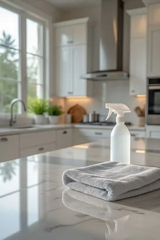

مرت على البيت أيام تعب، وواحد بعد الثاني من العيلة لزم الفراش. والحين الكل بدأ يتحسن، وتبون ترجعون البيت لوضعه: الشراشف، والحمامات، والمقابض، والريموتات اللي تنقلت بين الأيادي. وهنا يجي سؤال تعقيم البيت بعد المرض بالرياض: من وين نبدأ، ووش نستخدم، وكيف نسويه بأمان؟
محتويات المقال 39 قسم
- تعقيم البيت بعد المرض بالرياض: الفرق بين التنظيف والتعقيم
- قبل ما تبدأ
- خطوات تعقيم المنزل الصحيحة بالرياض: الترتيب الصحيح
- تنظيف المنزل بعد العدوى بالرياض: الأسطح اللي تنلمس كثير
- غرفة المريض
- دورات المياه
- المطبخ والأواني
- الأرضيات والسجاد والكنب
- المكيفات والفلاتر وهواء البيت
- الأسطح الحساسة: الرخام والخشب والجلد
- تقسيم الشغل بين أهل البيت
- أخطاء شائعة في التعقيم
- تعقيم آمن للبيوت اللي فيها أطفال وكبار سن وحيوانات أليفة
- متى توفر الاستعانة بفريق متخصص جهدك؟
- خلال أيام التعب: روتين يومي خفيف
- الغسيل والمناشف والملابس
- الجوالات والأجهزة الإلكترونية
- المدخل والمفاتيح والأحذية
- غرف الأطفال والألعاب
- المجلس واستقبال الزوار بعد التعب
- كيف تقرأ ملصق منتج التعقيم
- لو البيت كبير أو فيه أكثر من دور
- الأدوات بعد ما تخلصون
- ترتيب مقترح ليوم التنظيف
- الأغراض الشخصية الصغيرة
- لو كان التعب في غرفة العاملة أو الملحق
- السيارة
- سلال المهملات والتخلص من النفايات
- الهوا والروائح في جو الرياض
- تخزين المنتجات بعد الاستخدام
- لو الشخص التعبان لسا في البيت
- قبل ما تبدأون: أسئلة سريعة
- الدواليب والملابس النظيفة
- ركن الأدوية في البيت
- الجدران والأبواب حول السرير
- لو تكرر التعب في البيت
- بعد ما يخلص التنظيف
- أسئلة شائعة عن تعقيم البيت
- الخاتمة
في هالدليل نشرح تنظيف المنزل بعد العدوى بالرياض بخطوات مرتبة: وش الفرق بين التنظيف والتعقيم، وكيف تجهزون قبل ما تبدأون، ووش الأماكن اللي تحتاج اهتمام أكثر، وكيف تتعاملون مع غرفة المريض والحمامات والمطبخ والمفروشات. والهدف إن خطوات تعقيم المنزل الصحيحة بالرياض تكون واضحة وآمنة على كل أهل البيت.
💡 هالمقال معلوماتي عن التنظيف المنزلي، ومو نصيحة طبية. في أي حالة معدية، المرجع هو تعليمات الطبيب والجهات الصحية المختصة. واستخدموا أي منتج تنظيف أو تعقيم حسب تعليمات الشركة المصنعة المكتوبة عليه.
تعقيم البيت بعد المرض بالرياض: الفرق بين التنظيف والتعقيم
كثير من الناس يستخدمون الكلمتين بنفس المعنى، لكنهم خطوتين مختلفتين. التنظيف هو إزالة الأوساخ والغبار والبقع عن السطح بالماء والصابون أو المنظف. أما التعقيم فهو استخدام منتج مخصص للتعقيم على سطح نظيف، حسب تعليمات الشركة المصنعة.
وليش التنظيف أول؟ لأن الأوساخ والدهون والبقايا على السطح تحجب المادة المعقمة عنه، فما توصل له كويس. لما ترش معقم على طاولة عليها بقايا أكل، المادة تشتغل على البقايا مو على السطح. فالترتيب في تعقيم البيت بعد المرض بالرياض دائمًا: نظف، اشطف أو امسح، وبعدين عقم.
وفيه أسطح تكفيها النظافة العادية، وفيه أسطح تحتاج تعقيم بعد التنظيف، خصوصًا الأماكن اللي تنلمس كثير، والحمامات، وغرفة الشخص اللي كان تعبان. وفي تنظيف المنزل بعد العدوى بالرياض، هذا التمييز يوفر عليكم مواد ووقت، ويقلل استخدام المواد القوية في أماكن ما تحتاجها.
قبل ما تبدأ
التحضير جزء من خطوات تعقيم المنزل الصحيحة بالرياض. وهذي الأشياء اللي تجهزونها قبل أول مسحة:
اختيار الوقت المناسب
الأفضل يكون التنظيف الكبير بعد ما يتحسن الشخص اللي كان تعبان، وحسب ما ينصح فيه الطبيب. وخلال فترة التعب نفسها، يكفي تنظيف يومي خفيف للأماكن اللي تنلمس كثير والحمام اللي يستخدمه. والأفضل يقوم بالتنظيف شخص سليم، ويرتاح الشخص اللي لسا يتعافى.
التهوية
- افتحوا نوافذ غرفة المريض والغرف المشتركة
- شغلوا شفاطات الحمامات والمطبخ
- خلوا الأبواب الداخلية مفتوحة عشان يمشي الهوا
- في أيام الغبار، افتحوا النوافذ وقت أقل وكرروا أكثر من مرة
القفازات والكمام
البسوا قفازات للتنظيف طول الوقت، وكمام لو تبون، خصوصًا في غرفة المريض والحمام. وغيروا القفازات لو تقطعت، واغسلوا أيديكم بالماء والصابون بعد ما تشيلونها.
تجهيز الأدوات
- فوط مايكروفايبر نظيفة بألوان مختلفة: لون للحمامات، ولون للمطبخ، ولون للغرف
- منظف عادي أو ماء وصابون للخطوة الأولى
- منتج تعقيم مناسب للأسطح المنزلية، تستخدمونه حسب تعليمات الشركة المصنعة
- أكياس زبالة تتسكر كويس
- سلة غسيل مخصصة لمفارش وملابس المريض
- مكنسة كهربائية وممسحة أرضيات
فصل أدوات المريض
خلال فترة التعب وبعدها مباشرة، خلوا للشخص التعبان أدوات خاصة فيه: كوب، ومنشفة، وصحون إذا أمكن. وبعد ما يتحسن، هذي الأدوات تنغسل وتتنظف قبل ما ترجع للاستخدام المشترك.
خطوات تعقيم المنزل الصحيحة بالرياض: الترتيب الصحيح
الترتيب في تعقيم البيت بعد المرض بالرياض يفرق كثير. لو بدأتوا بالحمام وبعدين رحتوا للمطبخ بنفس الفوطة، نقلتوا اللي في الحمام للمطبخ. وهذي ثلاث قواعد تمشي على كل البيت:
من الأنظف للأقذر
ابدأوا بالأماكن الأنظف، مثل غرف النوم اللي ما دخلها المريض والصالة، وبعدين المطبخ، وبعدها غرفة المريض، وآخر شي الحمامات. وبكذا ما تنقلون شي من مكان أوسخ لمكان أنظف.
من الأعلى للأسفل
في كل غرفة، ابدأوا من فوق: الرفوف، والمقابض العالية، ومفاتيح الإضاءة، وبعدين الطاولات والأسطح، وآخر شي الأرضية. لأن أي شي ينزل من فوق بيطيح على اللي تحت.
الأرضيات آخر شي
الأرضية تجمع كل اللي نزل وقت تنظيف الأسطح. فلو نظفتوها أول، بترجعون لها. والأرضية آخر خطوة في كل غرفة، وآخر خطوة في البيت كله.
وغيروا الفوطة بين كل منطقة والثانية، أو استخدموا وجه نظيف منها. والفوطة اللي استخدمتوها في الحمام ما ترجع للمطبخ ولا للغرف قبل ما تنغسل.
تنظيف المنزل بعد العدوى بالرياض: الأسطح اللي تنلمس كثير
هذي الأماكن هي أكثر شي تنقلت عليه الأيادي وقت التعب، وهي أولوية في تنظيف المنزل بعد العدوى بالرياض. والطريقة لكل وحدة منها: نظفوها أول بماء وصابون أو منظف، وبعدين استخدموا منتج التعقيم حسب التعليمات، واتركوه الوقت المكتوب على العلبة قبل المسح أو التنشيف.
- مقابض الأبواب من الجهتين، خصوصًا أبواب الحمامات وغرفة المريض
- مفاتيح الإضاءة في كل الغرف
- الجوالات والتابلت: بفوطة مبللة شوي بمنتج مناسب للأجهزة الإلكترونية حسب تعليمات الجهاز، بدون رش مباشر
- الريموتات وأيادي ألعاب الفيديو
- الصنابير في المطبخ والحمامات
- مقابض الثلاجة والميكروويف وخزائن المطبخ
- الطاولات وطاولة الأكل والكراسي من المسند
- الدرابزين ومقابض الشبابيك
- الكيبورد والماوس لو فيه كمبيوتر مشترك
- أزرار الأجهزة: الغسالة، والمكيف، والكاتل
والأجهزة الإلكترونية حساسة للرطوبة، فلا ترشون عليها مباشرة، وما تستخدمون عليها منتج ما هو مخصص لها. والأفضل تشيكون تعليمات الشركة المصنعة للجهاز نفسه. وهذي الأسطح في تعقيم البيت بعد المرض بالرياض تحتاج تكرار يومي خلال فترة التعب.
محتاج تنظيف احترافي؟
تعبانين ومو قادرين على الشغل؟ فريقنا يتولى التنظيف والتعقيم عنكم بالترتيب الصحيح، من الأسطح اللي تنلمس كثير إلى الحمامات والأرضيات
غرفة المريض
غرفة الشخص اللي كان تعبان تحتاج أكثر اهتمام، لأنه قضى فيها أغلب وقته. وفي تعقيم البيت بعد المرض بالرياض، خلوها بعد الغرف الأنظف والمطبخ، وقبل الحمامات.
الشراشف والمخدات والأغطية
- شيلوا الشراشف وأكياس المخدات والأغطية بهدوء بدون ما تنفضونها في الهوا
- حطوها مباشرة في سلة الغسيل أو كيس، وما تحطونها على الأرض أو على سرير ثاني
- اغسلوها بأعلى حرارة تتحملها القماشة حسب الملصق، مع منظف الغسيل العادي
- نشفوها تمامًا، في النشافة أو في الشمس
- المخدات نفسها: اغسلوها لو ملصقها يسمح، أو هووها في الشمس
- البطانيات الثقيلة: حسب ملصقها، أو خلوها للمغسلة
المرتبة
اشفطوا المرتبة من الجهتين لو تقدرون تقلبونها، وهووها في غرفة مفتوحة النوافذ كم ساعة. ولو عليها بقع، نظفوها حسب نوع القماش وبأقل كمية ماء، لأن الرطوبة في المرتبة تسبب ريحة. والمرتبة اللي تحتاج تنظيف أعمق، تقدرون تخلونها لمختص بمكاين الشفط والغسيل.
الستائر والأسطح
- الستائر: انزلوها للغسيل لو تنغسل، أو اشفطوها وهووها
- الكومدينة وكل اللي عليها: الكاسات، والمناديل، والأدوية
- مفتاح الإضاءة جنب السرير ومقبض الباب
- سلة المهملات: فضوها بكيس مقفل، واغسلوها ونشفوها
وبعد ما تخلصون الغرفة، خلوا النوافذ مفتوحة فترة، وغيروا المفارش بمفارش نظيفة. وهذي الغرفة في خطوات تعقيم المنزل الصحيحة بالرياض تاخذ وقتها، لأنها أكثر مكان تحتاجون تطمنون عليه.
دورات المياه
الحمام اللي استخدمه الشخص التعبان يحتاج تنظيف ثم تعقيم، بنفس الترتيب: من الأنظف للأقذر، ومن فوق لتحت. وفي تنظيف المنزل بعد العدوى بالرياض، الحمامات آخر شي قبل الأرضيات:
- افتحوا الشفاط والنافذة لو موجودة
- المرايا والرفوف ومقبض الباب ومفتاح الإضاءة
- المغسلة والصنابير وقواعدها
- الدش أو البانيو والصنابير
- خزان السيفون من برا وزر التشغيل
- المرحاض من برا: الغطاء والمقعد من الجهتين والقاعدة
- المرحاض من الداخل بالفرشاة والمنظف المناسب
- الشطاف ورأسه
- الأرضية آخر شي، وخصوصًا حول المرحاض
نظفوا كل سطح بالمنظف أول، وبعدين استخدموا منتج التعقيم حسب تعليماته، واتركوه الوقت المطلوب. وغيروا المناشف ودواسة الحمام واغسلوها. وفرشاة المرحاض نفسها تحتاج تنظيف، أو استبدال لو كانت قديمة. والأدوات اللي استخدمتوها في الحمام تنغسل لحالها ولا تختلط مع أدوات البيت الثانية.
المطبخ والأواني
المطبخ مكان مشترك، وخلال التعب الكل يدخله: يجيبون موية، ويسوون شاي، ويحطون صحون. وفي تعقيم البيت بعد المرض بالرياض، المطبخ يجي بعد الغرف النظيفة وقبل غرفة المريض:
- اغسلوا الأكواب والصحون والملاعق اللي استخدمها الشخص التعبان بماء حار وصابون، أو في غسالة الصحون على برنامج حار
- الأدوات المشتركة: الكاتل، وأباريق الماء، ودلة القهوة والترامس
- الرخامة والكاونتر: نظفوها أول، وبعدين عقموها بمنتج مناسب للأسطح اللي يلامسها الأكل حسب التعليمات
- مقابض الثلاجة والخزائن والميكروويف
- الحوض والصنبور
- فوط المطبخ والإسفنج: غيروها أو اغسلوها بماء حار

وانتبهوا للأسطح اللي يلامسها الأكل مباشرة: بعض منتجات التعقيم تحتاج شطف بماء نظيف بعدها، والتعليمات مكتوبة على العلبة. وما تستخدمون منتج تعقيم على سطح أكل إلا لو مكتوب إنه مناسب لهالاستخدام.
الأرضيات والسجاد والكنب
بعد ما تخلصون الأسطح، دور الأرضيات والمفروشات. وهذي غالبًا آخر خطوة في تنظيف المنزل بعد العدوى بالرياض:
الأرضيات
- اشفطوا أو اكنسوا أول
- امسحوا بمنظف مناسب لنوع الأرضية
- الأرضيات القاسية في الحمامات وحول السرير: تقدرون تعقمونها بمنتج مناسب للأرضيات حسب تعليماته
- ابدأوا من أبعد زاوية واطلعوا باتجاه الباب
- خلوا الأرضية تنشف قبل ما يمشي عليها أحد
السجاد والكنب
اشفطوا السجاد والكنب كويس، خصوصًا الكنب اللي قعد عليه الشخص التعبان كثير. وشيلوا المخدات وهووها. والأغطية القابلة للفك، اغسلوها حسب ملصقها. ولو الكنب أو السجاد عليه بقع، أو تبون تنظيف أعمق، فهذا يحتاج مكاين شفط وغسيل، والأفضل يكون مع مختص يعرف يتعامل مع نوع القماش. وفي خطوات تعقيم المنزل الصحيحة بالرياض، التهوية بعد تنظيف المفروشات مهمة عشان تنشف تمامًا وما تمسك رطوبة.
المكيفات والفلاتر وهواء البيت
خلال أيام التعب، النوافذ غالبًا تكون مسكرة والمكيف شغال طول الوقت. وبعد ما يتحسن الكل، فلاتر المكيف تستاهل تنظيف:
- طفوا المكيف وافصلوا الكهرباء عنه
- طلعوا الفلاتر واغسلوها بماء فاتر وصابون خفيف حسب تعليمات الشركة المصنعة
- خلوها تنشف تمامًا قبل ما ترجعونها
- امسحوا الشبكة الخارجية وفتحات الهوا
- المكيفات المركزية: الفلاتر الرئيسية حسب تعليمات الشركة، والتنظيف الداخلي للمختص
وبعد التنظيف، هووا البيت بفتح النوافذ فترات متكررة، خصوصًا غرفة المريض. ولو عندكم جهاز تنقية هوا، شيكوا على فلتره حسب تعليماته. وفي تعقيم البيت بعد المرض بالرياض، الهوا النظيف جزء من النتيجة مثل الأسطح النظيفة.
الأسطح الحساسة: الرخام والخشب والجلد
مو كل منتج تعقيم يناسب كل سطح. وبعض المواد ممكن تغير لون الرخام، أو تجفف الخشب، أو تشقق الجلد. فقبل ما تستخدمون أي منتج، شيكوا إن الملصق يذكر إنه مناسب للسطح اللي بتستخدمونه عليه، وجربوه في زاوية ما تبان:
- الرخام والحجر الطبيعي: نظفوه بمنظف متعادل، وابعدوا عن المواد الحمضية، واختاروا منتج تعقيم مكتوب إنه يناسب الحجر
- الخشب والباركيه: ماء قليل، ومنتج مناسب للخشب، وتنشيف مباشر
- الجلد في الكنب والكراسي: منظف خاص بالجلد، وما تستخدمون عليه منتجات الأسطح الصلبة إلا لو التعليمات تسمح
- الستانلس: منتج مناسب للمعادن، ومسح مع اتجاه الخطوط
- الأقمشة: الغسيل حسب الملصق غالبًا هو الخيار الأنسب، والمنتجات المخصصة للأقمشة تستخدم حسب تعليماتها
- الشاشات: منتجات الإلكترونيات بس، بفوطة مبللة شوي
ولو ما تعرفون نوع السطح بالضبط، ابدأوا بالماء والصابون، لأن التنظيف الجيد بحد ذاته يشيل كثير من اللي على السطح.
تقسيم الشغل بين أهل البيت
لو فيه أكثر من شخص سليم يقدر يساعد، قسموا الشغل بحيث كل واحد ياخذ منطقة، بدل ما الكل يتنقل بين الغرف بنفس الأدوات:
- شخص للغسيل: تجميع الشراشف والمناشف وتشغيل الغسالة ونشر الغسيل
- شخص للأسطح اللي تنلمس كثير في البيت كله
- شخص للمطبخ والأواني
- شخص لغرفة المريض والحمام اللي استخدمه
- الأرضيات في الآخر لشخص واحد
وخلوا كل واحد بأدواته وفوطه الخاصة، عشان ما تختلط أدوات الحمام بأدوات المطبخ. والأطفال الكبار يقدرون يساعدون في ترتيب أغراضهم وتجميع الغسيل، بعيد عن المنتجات.
أخطاء شائعة في التعقيم
فيه أخطاء متكررة تخلي التعقيم أقل فايدة، وبعضها خطر على صحة اللي ينظف:
- خلط المواد الكيميائية: ممنوع تخلطون الكلور مع أي منظف ثاني، مثل الأمونيا أو الخل أو منظفات الحمامات، لأنه يطلع أبخرة ضارة
- الرش بدون تنظيف قبله: المعقم ما يشتغل كويس على سطح عليه أوساخ
- المسح على طول: كل منتج له وقت لازم يبقى فيه على السطح، مكتوب في تعليماته
- استخدام نفس الفوطة لكل البيت: تنقل اللي في الحمام للمطبخ والغرف
- إهمال الأدوات الصغيرة: الريموتات، والجوالات، ومقابض الأدراج، وأزرار الأجهزة
- زيادة الكمية: أكثر من المطلوب ما يعني نتيجة أحسن، ويزيد الأبخرة والبقايا
- التعقيم في غرفة مسكرة بدون تهوية
- نقل المنتج لعلبة ثانية بدون ملصق، فينخلط أو يوصل له الأطفال
والقاعدة في خطوات تعقيم المنزل الصحيحة بالرياض بسيطة: منتج واحد مناسب في كل مرة، وتعليماته قدامكم، وتهوية، وقفازات.
تعقيم آمن للبيوت اللي فيها أطفال وكبار سن وحيوانات أليفة
الأطفال والكبار والحيوانات الأليفة أكثر حساسية للمواد وأبخرتها. وفي تعقيم البيت بعد المرض بالرياض في هالبيوت، خذوا بالكم:
- أبعدوهم عن الغرفة اللي تنظفونها لين تخلص وتنشف وتتهوى
- الألعاب: نظفوها بماء وصابون، واللي تحتاج تعقيم استخدموا منتج مناسب للألعاب حسب تعليماته، واشطفوها لو التعليمات تقول
- الأسطح اللي يوصل لها الطفل: بعد التعقيم اتبعوا تعليمات المنتج بخصوص الشطف
- أماكن أكل وشرب الحيوانات الأليفة: اغسلوها بماء حار وصابون، وما تستخدمون عليها منتج غير مناسب
- خزنوا كل المنتجات في مكان عالي ومقفل أول ما تخلصون
- كبار السن: خلوهم في غرفة مهواة وبعيدة وقت استخدام المواد
ولو عندكم شخص عنده حساسية أو مشاكل في التنفس، اسألوا الطبيب عن المنتجات المناسبة قبل ما تستخدمونها. وفي تنظيف المنزل بعد العدوى بالرياض لهالبيوت، اشتغلوا على مهلكم مع تهوية زينة.
متى توفر الاستعانة بفريق متخصص جهدك؟
بعد أيام التعب، أغلب العيلة تكون مرهقة. والتنظيف والتعقيم الكامل للبيت شغل طويل، خصوصًا لو البيت كبير، أو التعب مر على أكثر من شخص، أو فيه أكثر من حمام وغرفة تحتاج اهتمام. وأحيانًا الشخص اللي ينظف يكون لسا يتعافى، أو مشغول بالعناية بالأطفال أو الكبار.
في هالحالات، تقدرون تتواصلون مع شركة تنظيف منازل بالرياض وتطلبون تنظيف وتعقيم للبيت. والفريق يشتغل بنفس الترتيب: الأسطح اللي تنلمس كثير، والغرف من الأنظف للأقذر، والحمامات، والأرضيات آخر شي، مع شفط الكنب والسجاد والمراتب. ويستخدم منتجات مخصصة للأسطح المنزلية حسب تعليمات الشركات المصنعة، مع التهوية والقفازات وفصل أدوات كل منطقة.
وكذا يكون تعقيم البيت بعد المرض بالرياض خلص بدون ما يتعب أحد من العيلة، وتقدرون تركزون على الراحة. وقبل ما يطلع الفريق، تقدرون تمرون معهم على غرفة المريض والحمامات والمطبخ. ومع الفريق، خطوات تعقيم المنزل الصحيحة بالرياض تتنفذ كاملة في وقت أقل، وتطمنون إن ما فيه مكان انتسى.
خلال أيام التعب: روتين يومي خفيف
التنظيف الكبير يجي بعد ما يتحسن الشخص، لكن خلال أيام التعب نفسها فيه روتين خفيف يساعد البيت يبقى مرتب، ويخفف الشغل في الآخر. وهذا الروتين جزء من تنظيف المنزل بعد العدوى بالرياض، بس بشكل يومي بسيط:
- هووا غرفة الشخص التعبان كم مرة في اليوم، حسب الجو
- امسحوا مقابض الأبواب ومفاتيح الإضاءة والريموت مرة في اليوم
- فضوا سلة المهملات في الغرفة يوميًا بكيس مقفل
- امسحوا مغسلة الحمام اللي يستخدمه وصنبورها ومقبض بابه
- خلوا له كوب ومنشفة خاصة فيه، واغسلوها بانتظام
- اغسلوا أيديكم بعد ما تخدمونه أو تشيلون أغراضه
وهالروتين ما يحتاج مواد كثيرة. ماء وصابون، ومنتج تعقيم للأسطح اللي تنلمس كثير حسب تعليماته. وبعد ما يتحسن، يجي تعقيم البيت بعد المرض بالرياض الكامل وأنتم مرتاحين إن البيت ما تراكم فيه شي. ومع هالروتين، خطوات تعقيم المنزل الصحيحة بالرياض في الآخر تكون أخف وأسرع.
الغسيل والمناشف والملابس
الغسيل جزء كبير من تعقيم البيت بعد المرض بالرياض، لأن الأقمشة اللي استخدمها الشخص التعبان كثيرة: ملابس النوم، والمناشف، والشراشف، وأحيانًا البطانيات والمخدات. وهذي طريقة مرتبة:
- خصصوا سلة أو كيس لأقمشة الشخص التعبان، وما تخلطونها مع غسيل باقي العيلة وقت التجميع
- شيلوا الأقمشة بهدوء بدون نفض
- اغسلوها بأعلى حرارة تتحملها القماشة حسب الملصق
- نشفوها تمامًا، لأن الرطوبة تخلي القماش يمسك ريحة
- نظفوا سلة الغسيل نفسها بعد ما تفضونها
- اغسلوا أيديكم بعد التعامل مع الغسيل قبل ما تلمسون شي ثاني
والغسالة نفسها، بعد ما تخلصون دفعات الغسيل، تقدرون تشغلونها دورة فاضية بماء حار حسب تعليماتها، وتمسحون المطاط ودرج المنظف. وكذا تنظيف المنزل بعد العدوى بالرياض يوصل للأماكن اللي ما ينتبه لها أحد.
الجوالات والأجهزة الإلكترونية
الجوال يمكن أكثر شي تلمسه في اليوم، وخلال أيام التعب يتنقل بين اليدين وجنب السرير. والأجهزة الإلكترونية لها طريقة خاصة، لأن الرطوبة والمواد القوية ممكن تخربها. وفي خطوات تعقيم المنزل الصحيحة بالرياض، هذي الخطوات العامة:
- طفوا الجهاز وافصلوه من الشاحن
- شيلوا الكفر واغسلوه لحاله بماء وصابون لو مادته تسمح، ونشفوه
- امسحوا الجهاز بفوطة ناعمة مبللة شوي، مو مبلولة، بمنتج مناسب للإلكترونيات حسب تعليمات الشركة المصنعة للجهاز
- ابعدوا عن الفتحات والمنافذ
- خلوه ينشف تمامًا قبل ما ترجعون الكفر وتشغلونه
- نفس الطريقة للتابلت، والريموتات، وأيادي الألعاب، والكيبورد والماوس
ولا ترشون أي منتج مباشرة على الشاشة أو الجهاز. والأفضل تشيكون موقع الشركة المصنعة أو دليل الجهاز عن المواد اللي تسمح فيها. وهذي من الأشياء اللي تنسى كثير في تعقيم البيت بعد المرض بالرياض، مع إنها من أكثر الأشياء استخدامًا.
المدخل والمفاتيح والأحذية
المدخل مكان يمر منه كل أهل البيت والزوار، وفيه أشياء تنلمس كثير بدون ما ننتبه. وفي تنظيف المنزل بعد العدوى بالرياض، خذوا جولة سريعة عليه:
- مقبض الباب الرئيسي من الداخل والخارج، والجرس
- علاقة المفاتيح والمفاتيح نفسها
- رف الأحذية: امسحوه من الغبار
- الدواسة: انفضوها برا أو اغسلوها حسب نوعها
- أي سطح تحطون عليه الأغراض أول ما تدخلون: الشنط، والمحافظ، والأكياس
وهالمكان يحتاج مسح منتظم حتى بعد ما يرجع البيت لوضعه، لأنه أول نقطة تلامس بين برا والبيت.
غرف الأطفال والألعاب
لو الطفل هو اللي كان تعبان، أو كان قريب من الشخص التعبان، فغرفته وألعابه تحتاج اهتمام. والأطفال يحطون الألعاب في فمهم، ويلمسون كل شي. وفي تعقيم البيت بعد المرض بالرياض لغرف الأطفال:
- الألعاب البلاستيك القاسية: اغسلوها بماء وصابون، واللي تحتاج تعقيم استخدموا منتج مناسب للألعاب حسب تعليماته، واشطفوها لو مكتوب
- الألعاب القماش والدمى: اغسلوها في الغسالة لو ملصقها يسمح، أو هووها في الشمس
- الألعاب الإلكترونية: نفس طريقة الأجهزة، بفوطة مبللة شوي بدون رش
- مقابض الدواليب والأدراج، ومفتاح الإضاءة، وحواف السرير
- الكتب والأقلام: امسحوا الأغلفة البلاستيك، وخلوا الورق يتهوى
- السجاد اللي يلعب عليه الطفل: اشفطوه كويس
ونظفوا غرفة الطفل وهو برا، وخلوها تتهوى قبل ما يرجع. وفي خطوات تعقيم المنزل الصحيحة بالرياض لغرف الأطفال، اختاروا دائمًا الأخف من المنتجات، واتبعوا تعليمات الشطف بدقة.
المجلس واستقبال الزوار بعد التعب
في بيوت الرياض، أول ما يتحسن الواحد، تبدأ الزيارات والاطمئنان. والمجلس يستقبل ناس كثير في فترة قصيرة. وفي تعقيم البيت بعد المرض بالرياض، المجلس يحتاج تجهيز قبل ما تبدأ الزيارات:
- افتحوا المجلس وهووه، خصوصًا لو كان مسكر فترة
- امسحوا المساند وذراعات الكنب من القماش أو الجلد بالطريقة المناسبة لها
- اغسلوا فناجين القهوة والبيالات والدلال والترامس بماء حار وصابون
- امسحوا الطاولات وصواني الضيافة
- حطوا علبة مناديل ومعقم أيدي في مكان واضح
- مقبض باب المجلس وحمام الضيوف
وبعد الزيارات، جولة سريعة على نفس الأماكن. وكذا يبقى تنظيف المنزل بعد العدوى بالرياض محافظ على نتيجته حتى مع كثرة الضيوف.
كيف تقرأ ملصق منتج التعقيم
أهم شي في خطوات تعقيم المنزل الصحيحة بالرياض هو إنك تستخدم المنتج زي ما مكتوب عليه. والملصق فيه معلومات أكثر من ما نتوقع، وكثير ما يقرأها. وهذا اللي تدورون عليه:
- الأسطح المناسبة: هل هو للأسطح الصلبة بس، أو يناسب الأقمشة، أو أسطح الأكل؟
- طريقة الاستخدام: يرش مباشرة، أو يتخفف بالماء، أو يتحط على فوطة؟
- وقت البقاء: كم دقيقة لازم يبقى المنتج مبلل على السطح قبل المسح
- الشطف: هل يحتاج شطف بماء نظيف بعده، خصوصًا على أسطح الأكل والألعاب؟
- التهوية والوقاية: هل يحتاج قفازات أو تهوية أو كمام؟
- التحذيرات: المواد اللي ما ينخلط معها، والأسطح اللي ممكن يضرها
- التخزين: بعيد عن الأطفال والحرارة
ولو المنتج ما فيه تعليمات واضحة باللغة اللي تفهمونها، فلا تستخدمونه. وفي تعقيم البيت بعد المرض بالرياض، يكفيكم منتج واحد مناسب تستخدمونه حسب تعليماته. وهذي من أبسط خطوات تعقيم المنزل الصحيحة بالرياض وأكثرها أهمية.
لو البيت كبير أو فيه أكثر من دور
في الفلل والبيوت الكبيرة، التعب ممكن يكون في دور واحد، أو موزع على أكثر من غرفة. وهنا تنظيف المنزل بعد العدوى بالرياض يحتاج خطة أوضح:
- حددوا الغرف والحمامات اللي استخدمها الشخص التعبان، وخلوها الأولوية
- جهزوا سلة أدوات لكل دور، عشان ما تنقلون الفوط بين الأدوار
- ابدأوا بالدور الأنظف، وانتهوا بالدور اللي كان فيه التعب
- الدرج والدرابزين: نظفوهم بعد ما تخلصون الدورين
- وزعوا الشغل على يومين لو المساحة كبيرة
وفي البيوت الكبيرة، تعقيم البيت بعد المرض بالرياض ممكن ياخذ يوم كامل أو أكثر لو كان التعب مر على أكثر من شخص. والأهم إن خطوات تعقيم المنزل الصحيحة بالرياض تمشي بنفس الترتيب في كل دور، بدون استعجال.
الأدوات بعد ما تخلصون
الفوط والإسفنج والممسحة اللي استخدمتوها تحتاج تنظيف بعد الشغل، عشان ما ترجعون تستخدمونها وهي تنقل اللي شالته:
- اغسلوا فوط المايكروفايبر بماء حار، بدون منعم ملابس
- الإسفنج المستعمل في الحمامات: تخلصوا منه
- رأس الممسحة: اغسلوه بماء حار ونشفوه
- الدلو: اغسلوه ونشفوه
- فرشاة المرحاض وحاملها: نظفوها، أو بدلوها لو قديمة
- القفازات: لو للاستخدام مرة وحدة تخلصوا منها، ولو قابلة لإعادة الاستخدام اغسلوها من برا قبل ما تشيلونها
وبعد كل هذا، اغسلوا أيديكم كويس. وهذي آخر خطوة في تعقيم البيت بعد المرض بالرياض، وفيها تكملون خطوات تعقيم المنزل الصحيحة بالرياض.
ترتيب مقترح ليوم التنظيف
هذا جدول يساعدكم توزعون تنظيف المنزل بعد العدوى بالرياض على يوم واحد في بيت متوسط. والوقت يتغير حسب حجم البيت وعدد الغرف اللي تحتاج اهتمام:
| المرحلة | المهام |
|---|---|
| البداية | تهوية البيت كله، وتجهيز الأدوات والقفازات، وتجميع غسيل الشخص التعبان |
| الغرف الأنظف | غرف النوم الثانية والصالة: الأسطح اللي تنلمس كثير وبعدها الأسطح العامة |
| المطبخ | الأواني المشتركة، والمقابض، والكاونتر، والحوض |
| غرفة المريض | الشراشف للغسيل، والأسطح، والمرتبة، والستائر |
| الحمامات | تنظيف ثم تعقيم من فوق لتحت، وتغيير المناشف |
| الأرضيات | شفط ومسح كل البيت، من الداخل للمدخل |
| النهاية | فلاتر المكيفات، وتنظيف الأدوات، وتهوية أخيرة |
وهالترتيب يطبق خطوات تعقيم المنزل الصحيحة بالرياض على البيت كله: من الأنظف للأقذر، والأرضيات آخر شي. وفي تعقيم البيت بعد المرض بالرياض، لو ما لحقتوا كل شي في يوم، خلوا المفروشات والمكيفات لليوم الثاني.
الأغراض الشخصية الصغيرة
فيه أغراض شخصية يستخدمها الواحد كل يوم وتنسى وقت التنظيف، وهي جزء من تنظيف المنزل بعد العدوى بالرياض:
- فرشاة الأسنان: كثير من الناس يفضلون يبدلونها بعد فترة التعب، واسألوا طبيب الأسنان أو الطبيب لو عندكم سؤال
- الأمشاط والفرش: اغسلوها بماء دافي وصابون ونشفوها
- النظارات: امسحوها بمنظف النظارات وفوطتها الخاصة
- الساعة والإكسسوارات: امسحوها بالطريقة المناسبة لمادتها
- قارورة الماء الشخصية: اغسلوها بماء حار وصابون، والغطاء لحاله
- المحفظة والشنطة: امسحوها من برا
وهالأغراض صغيرة، لكنها تنلمس طول اليوم. وتنظيفها ياخذ دقايق في آخر تعقيم البيت بعد المرض بالرياض.
لو كان التعب في غرفة العاملة أو الملحق
في كثير من بيوت الرياض فيه غرفة للعاملة المنزلية أو ملحق مستقل. ولو كان التعب هناك، فهذي الأماكن تحتاج نفس الاهتمام، وأحيانًا تنسى لأنها بعيدة عن البيت الرئيسي. وطبقوا نفس الخطوات:
- هووا الغرفة وحمامها
- اغسلوا الشراشف والمناشف بأعلى حرارة تتحملها القماشة
- الأسطح اللي تنلمس كثير: المقابض، ومفاتيح الإضاءة، والصنابير
- الحمام: تنظيف ثم تعقيم من فوق لتحت
- المكيف: نظفوا فلتره
- أدواتها الشخصية في المطبخ: اغسلوها بماء حار وصابون
وتأكدوا إن الشخص هناك عنده أدوات نظافة كافية ومنشفة خاصة فيه، ويتابع مع الطبيب مثل باقي أهل البيت.
السيارة
لو الشخص التعبان راح للطبيب أو المستشفى بسيارة العيلة، فالسيارة فيها أسطح تنلمس كثير مثل البيت. وتنظيفها ياخذ ربع ساعة:
- مقابض الأبواب من برا ومن داخل
- الدركسون وناقل الحركة وأزرار التكييف والراديو
- أحزمة الأمان من عند المشبك
- الشاشة بمنتج مناسب للشاشات
- المقاعد: اشفطوها، ونظفوا البقع حسب نوع المادة
- الدواسات: انفضوها أو اغسلوها
ولا تستخدمون في السيارة منتجات قوية في مكان مسكر، وخلوا الأبواب مفتوحة وقت التنظيف وبعده شوي.
سلال المهملات والتخلص من النفايات
خلال أيام التعب تتجمع مناديل كثيرة وأغراض مستعملة. والتعامل معها جزء من نظافة البيت:
- حطوا كيس في كل سلة، وسكروه كويس قبل ما تشيلونه
- فضوا سلة غرفة المريض والحمام يوميًا
- لا تضغطون الكيس بيدكم عشان يدخل أكثر
- اغسلوا السلال نفسها بماء وصابون بعد ما تخلص فترة التعب، ونشفوها
- اغسلوا أيديكم بعد ما تطلعون الزبالة
الهوا والروائح في جو الرياض
التهوية من أبسط الخطوات وأكثرها أهمية بعد أيام التعب، لكن جو الرياض يخليها تحتاج تنظيم. في الصيف الحر شديد، وفي مواسم الغبار ما تقدرون تخلون النوافذ مفتوحة طول الوقت. والحل إنكم تفتحون النوافذ أوقات قصيرة ومتكررة: الصباح بدري، وبعد المغرب لما يبرد الجو، ربع ساعة أو نص ساعة كل مرة. وافتحوا نوافذ متقابلة عشان يمشي الهوا. وفي أيام الغبار، اكتفوا بالشفاطات، وافتحوا النوافذ لما يهدى الجو. ولا تحاولون تغطون الروائح بالبخور أو المعطرات القوية بعد التنظيف مباشرة، خصوصًا لو فيه أحد لسا يتعافى أو عنده حساسية، وخلوا الهوا النظيف يشتغل أول.
تخزين المنتجات بعد الاستخدام
بعد ما تخلصون، رجعوا كل المنتجات في علبها الأصلية بملصقاتها، وسكروا الأغطية كويس. وخزنوها في مكان عالي أو مقفل، بعيد عن الأطفال والحيوانات الأليفة ومصادر الحرارة والشمس المباشرة. ولا تخزنون منتجات التنظيف جنب الأكل أو في خزائن المطبخ اللي فيها أواني. واللي انتهت صلاحيته، أو تغير لونه أو ريحته، تخلصوا منه حسب التعليمات المكتوبة عليه.
لو الشخص التعبان لسا في البيت
أحيانًا تحتاجون تنظفون غرفته أو حمامه وهو لسا يتعافى في البيت. وهنا التنظيف يكون أخف، والتنظيم أهم:
- خلوه ينتقل لغرفة ثانية مهواة وقت تنظيف غرفته، وارجعوه بعد ما تنشف وتتهوى
- نظفوا الحمام اللي يستخدمه بعد ما يخلص استخدامه
- خلوا المسافة مريحة وقت التنظيف، والبسوا قفازات
- ابعدوا المنتجات ذات الريحة القوية عن مكانه
- غيروا مفارشه بمفارش نظيفة، والقديمة للغسيل مباشرة
- اسألوا الطبيب لو عندكم أي تعليمات خاصة بالحالة
وفي هالفترة ركزوا على الأماكن المشتركة بين أهل البيت، مثل المقابض والصنابير والريموتات، وأجلوا التنظيف الكامل لغرفته لين يتحسن.
قبل ما تبدأون: أسئلة سريعة
خمس دقايق تخططون فيها توفر عليكم ساعات. اسألوا أنفسكم:
- وش الغرف والحمامات اللي استخدمها الشخص التعبان أكثر؟
- مين بينظف، ومين بيبعد الأطفال والكبار وقت الشغل؟
- هل عندنا منتج تعقيم مناسب للأسطح، وقرينا تعليماته؟
- هل عندنا قفازات وفوط كافية بألوان مختلفة؟
- هل الجو يسمح نفتح النوافذ اليوم، ولا فيه غبار؟
- هل البيت كبير ويحتاج يومين، أو نحتاج مساعدة؟
والإجابات تحدد لكم خطة اليوم، وتخلي كل واحد يعرف دوره من البداية.
الدواليب والملابس النظيفة
الملابس النظيفة اللي في الدواليب ما تحتاج غسيل غالبًا، لأنها ما انلبست وقت التعب. لكن الدولاب نفسه ينفتح ويتسكر كثير، ومقابضه تنلمس. امسحوا المقابض وحواف الأبواب، والأدراج اللي تنفتح كل يوم. والملابس اللي انلبست خلال فترة التعب، حتى لو مرة وحدة، رجعوها للغسيل بدل الدولاب. والملابس اللي كانت معلقة على كرسي أو باب في غرفة المريض، اغسلوها كمان. وبعد ما تخلصون، خلوا الدولاب مفتوح شوي وقت تهوية الغرفة، عشان ما يمسك ريحة المكان المسكر. والأحذية والنعالات اللي استخدمها في البيت، امسحوها من برا ومن تحت، والقماش منها اغسلوه لو ملصقه يسمح.
ركن الأدوية في البيت
خلال أيام التعب، الأدوية والمستلزمات تنتشر في البيت: على الكومدينة، وفي المطبخ، وجنب الكنب. وبعد ما يتحسن الكل، رتبوا ركن الأدوية:
- جمعوا كل الأدوية في مكان واحد عالي ومقفل وبعيد عن الأطفال
- امسحوا العلب من برا، والرف أو الدرج اللي تنحط فيه
- شيكوا على تواريخ الانتهاء، واسألوا الصيدلي عن الطريقة المناسبة للتخلص من المنتهي
- الأدوات مثل ميزان الحرارة: نظفوها حسب تعليمات الشركة المصنعة
- كوب قياس الدواء والملاعق: اغسلوها بماء حار وصابون ونشفوها
ولا تستخدمون أي دواء باقي من فترة التعب لشخص ثاني بدون استشارة الطبيب أو الصيدلي.
الجدران والأبواب حول السرير
الجدار جنب السرير، وحافة الباب، وإطار النافذة القريبة، كلها أماكن تنلمس أكثر من ما نتوقع، خصوصًا لما يكون الواحد تعبان ويتسند وهو يقوم. امسحوها بماء وصابون وإسفنجة ناعمة، وخصوصًا الجزء اللي على مستوى اليد. ولو الجدار مدهون بدهان مطفي، جربوا في زاوية صغيرة أول، لأن بعض الدهانات تتأثر بالفرك أو المنتجات. ومنتجات التعقيم على الجدران استخدموها بس لو الملصق يذكر إنها تناسب الأسطح المدهونة.
لو تكرر التعب في البيت
أحيانًا يتنقل التعب من شخص لثاني في العيلة على مدى أسابيع. وهنا أهم شي إنكم تتابعون مع الطبيب، وتتبعون تعليماته وتعليمات الجهات الصحية المختصة. ومن ناحية التنظيف، خلوا الروتين اليومي الخفيف مستمر طول الفترة: الأسطح اللي تنلمس كثير، والحمامات، والغسيل، والتهوية. وأجلوا التنظيف الكبير لين يتحسن آخر شخص، عشان ما تعيدونه أكثر من مرة. ولو حسيتوا إن الشغل صار فوق طاقتكم، خلوا أحد يساعدكم بدل ما يتعب الشخص اللي يعتني بالباقين.
بعد ما يخلص التنظيف
التنظيف الكبير يكون مرة وحدة، لكن فيه عادات بسيطة تساعد بعده:
- غسيل الأيدي بالماء والصابون، خصوصًا قبل الأكل وبعد الحمام
- مسح الأسطح اللي تنلمس كثير بشكل منتظم طول السنة
- تهوية الغرف يوميًا
- غسيل المناشف والمفارش أسبوعيًا
- منشفة لكل شخص في الحمام
وهالعادات تخلي تنظيف المنزل بعد العدوى بالرياض أسهل لو احتجتوه مرة ثانية، لأن البيت يكون نظيف أصلًا.
أسئلة شائعة عن تعقيم البيت
الخاتمة
بعد أيام التعب في البيت بالرياض، الترتيب الصح يخلي التنظيف أسهل وأأمن: نظفوا أول وبعدين عقموا، ومن الأنظف للأقذر، ومن الأعلى للأسفل، والأرضيات آخر شي. واستخدموا كل منتج حسب تعليماته، بدون خلط، ومع تهوية وقفازات. وفي أي حالة معدية، خلوا تعليمات الطبيب والجهات الصحية هي المرجع.
ولو العيلة مرهقة أو البيت كبير، فريق مؤسسة نقاء يخدم كل أحياء الرياض، ويتولى التنظيف والتعقيم عنكم، وتراجعون الشغل معه قبل ما يطلع.
تنظيف وتعقيم البيت عنكم
احجزوا تنظيف وتعقيم للبيت، والفريق يشتغل بالترتيب الصحيح من الأنظف للأقذر
محتاج تنظيف احترافي؟
تواصلوا معنا واحجزوا تنظيف وتعقيم للبيت، والفريق يتولى الشغل وأنتم ترتاحون
- الأسطح اللي تنلمس كثير في كل الغرف
- غرفة المريض والحمامات والمطبخ
- شفط الكنب والسجاد والمراتب
- خدمة في كل أحياء الرياض